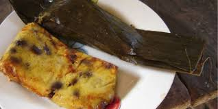
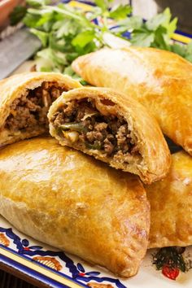

Bollos
Los bollos son un platillo tradicional de la gastronomía guatemalteca, especialmente populares en la región de Petén. Se preparan con masa de maíz y pueden ser rellenos de diversos ingredientes, como carne, frijoles o verduras. Suelen estar envueltos en hojas de plátano, lo que les aporta un sabor característico y una textura suave.
Ingredientes
- Masa de maíz: Base del bollo.
- Carne: Puede ser cerdo, pollo o res, cocida y desmenuzada.
- Frijoles: Frijoles negros o rojos, cocidos y machacados.
- Especias: Ajo, cebolla, comino y achiote para dar sabor.
- Hojas de plátano: Para envolver los tamales.
Preparacion
- Preparar la masa: Mezcla la masa de maíz con agua y sal hasta obtener una consistencia suave.
- Cocinar la carne: Cocina la carne con especias al gusto y desmenúzala.
- Preparar el relleno: Mezcla la carne desmenuzada con los frijoles y las especias.
- Envolver: Toma una porción de masa y extiéndela sobre una hoja de plátano. Agrega una cucharada del relleno y envuelve bien.
- Cocción: Hierve los bollos en agua durante aproximadamente 30-40 minutos o hasta que la masa esté cocida.
Los bollos se pueden servir con salsa de tomate o guacamole y son ideales para compartir en celebraciones familiares. Su sabor y versatilidad los convierten en un favorito de la cocina guatemalteca.

Empanadas de Tziquinche
Las empanadas de tziquinche son un platillo tradicional de la gastronomía guatemalteca, especialmente popular en la región de Petén. Estas empanadas están hechas con masa de maíz y se rellenan principalmente con tziquinche, que es una especie de carne desmenuzada de venado o de res, aunque también se pueden encontrar con otros rellenos.
Ingredientes
- Masa de maíz: Base de la empanada.
- Tziquinche: 1 taza de tziquinche.
- Carne: Puede usar carne de venado o de res pero es opcional.
- Especias: Ajo, cebolla, comino y sal al gusto.
- Aceite: Para freír (opcional).
Preparacion
- Preparar el tziquinche: Cocina la carne de venado o de res con agua, ajo, cebolla, comino y sal hasta que esté tierna. Desmenuza la carne y mezcla con más especias al gusto. Reserva.
- Preparar la masa: Mezcla la masa de maíz con agua y sal hasta que tenga una consistencia suave.
- Formar las empanadas: Toma una porción de masa, aplánala y coloca una cucharada de tziquinche en el centro. Cierra la empanada presionando los bordes.
- Cocinar: Fría las empanadas en aceite caliente hasta que estén doradas y crujientes, o cocínalas al vapor si prefieres.
Sirve las empanadas de tziquinche calientes, acompañadas de salsas como la de tomate o una salsa picante. ¡Son perfectas para compartir y disfrutar de la tradición guatemalteca!
